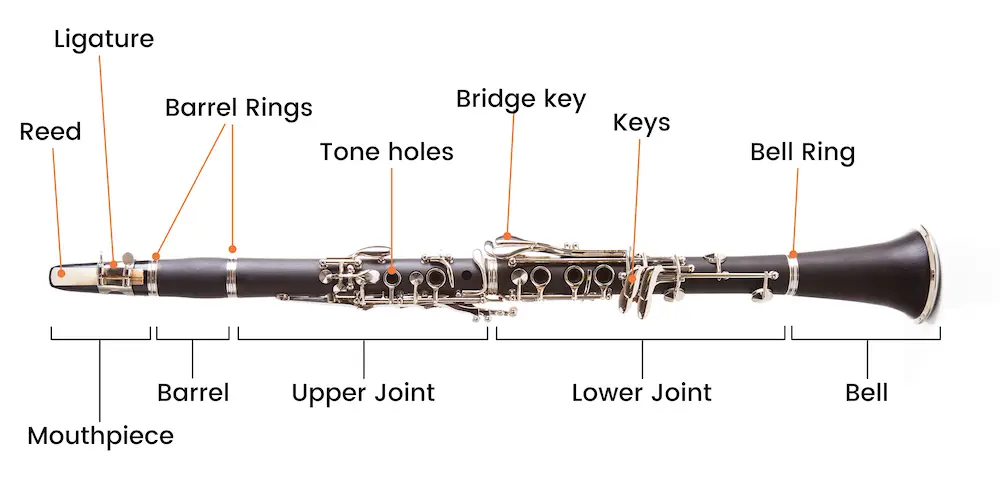

The clarinet is a wonderful instrument. It can evoke so many emotions, from sweet and gentle to powerful and intense.
-Aaron Copland
Woodwind instruments produce sound by causing a column of air to vibrate within a tube or resonator, typically by blowing into a mouthpiece or reed. The pitch of the sound is determined by the length of the air column and can be altered by opening or closing finger holes or keys along the length of the instrument.
Woodwind
Flute
A melodic instrument for the most part, the flute has a clear and bright sound with a distinctive warmth, refinement, and subtlety to its tone. Another feature of the flute is the use of expensive materials such as gold, silver, and gems in its manufacture.
Oboe
Oboes, whose name comes from the French for "high-pitched wood," are excellent for solo performances with many notes in high ranges. The oboe is extremely difficult to play.
Clarinet
The appeal of the clarinet is its rich variety of expression, which ranges from a light timbre to a deep mysterious timbre. It also boasts a register of approximately four octaves—the largest of any wind instrument.

Bassoon
From deep resounding low notes to sweet melodies, unhindered expression. The long, wide wooden pipe of the bassoon contains much wisdom.